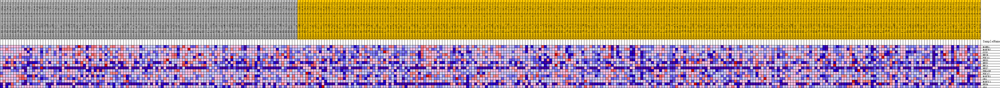
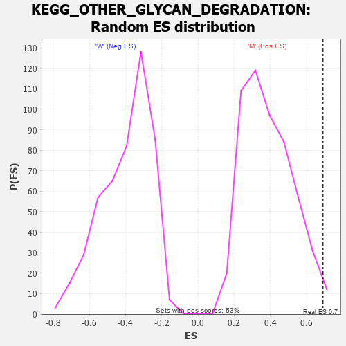

Profile of the Running ES Score & Positions of GeneSet Members on the Rank Ordered List
| Dataset | MUC16.MUC16.cls#M_versus_W.MUC16.cls#M_versus_W_repos |
| Phenotype | MUC16.cls#M_versus_W_repos |
| Upregulated in class | M |
| GeneSet | KEGG_OTHER_GLYCAN_DEGRADATION |
| Enrichment Score (ES) | 0.68893737 |
| Normalized Enrichment Score (NES) | 1.7754071 |
| Nominal p-value | 0.018903593 |
| FDR q-value | 0.06820313 |
| FWER p-Value | 0.338 |
| PROBE | DESCRIPTION (from dataset) | GENE SYMBOL | GENE_TITLE | RANK IN GENE LIST | RANK METRIC SCORE | RUNNING ES | CORE ENRICHMENT | |
|---|---|---|---|---|---|---|---|---|
| 1 | MANBA | na | 1296 | 0.138 | 0.1282 | Yes | ||
| 2 | MAN2B2 | na | 1699 | 0.125 | 0.2584 | Yes | ||
| 3 | GLB1 | na | 1971 | 0.117 | 0.3819 | Yes | ||
| 4 | HEXB | na | 2503 | 0.105 | 0.4877 | Yes | ||
| 5 | FUCA1 | na | 3578 | 0.088 | 0.5646 | Yes | ||
| 6 | NEU3 | na | 3825 | 0.084 | 0.6523 | Yes | ||
| 7 | NEU1 | na | 5773 | 0.061 | 0.6840 | Yes | ||
| 8 | HEXA | na | 8939 | 0.033 | 0.6632 | Yes | ||
| 9 | NEU2 | na | 9384 | 0.030 | 0.6878 | Yes | ||
| 10 | ENGASE | na | 10566 | 0.021 | 0.6889 | Yes | ||
| 11 | FUCA2 | na | 13186 | 0.003 | 0.6451 | No | ||
| 12 | MAN2B1 | na | 13514 | 0.001 | 0.6405 | No | ||
| 13 | GBA | na | 16264 | -0.006 | 0.5977 | No | ||
| 14 | MAN2C1 | na | 17212 | -0.012 | 0.5932 | No | ||
| 15 | NEU4 | na | 18627 | -0.019 | 0.5882 | No | ||
| 16 | AGA | na | 31436 | -0.068 | 0.4313 | No |

